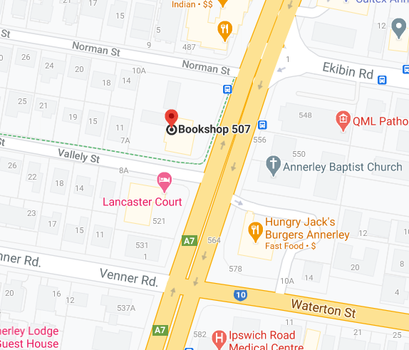
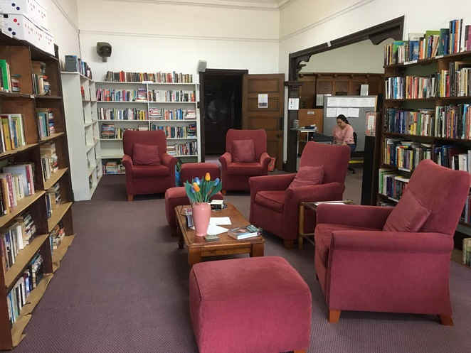

Bookshop 507
Bookshop 507 is located at 507 Ipswich Rd, Annerley QLD 4103.


(Maleela, 2019)
Bookshop 507 is part of Braille House's efforts to fund its work to support those with low or no vision.
You can purchase handmade gifts here as well.